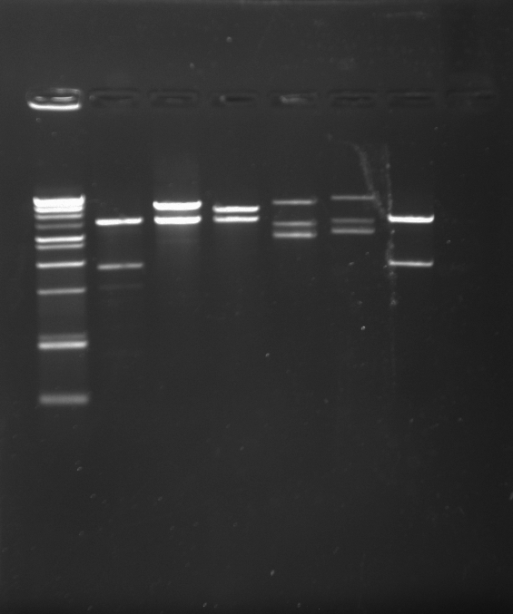

Team UC Santa Barbara's project goal is to engineer a strain of E. coli that expresses GFP in response to contact with a different strain of bacteria.. The proposed mechanism of action is an application of contact-dependent growth inhibition (CDI). CDI is a system used by some bacteria to inhibit other bacterial cells that are in direct contact 1. Particularly, cells that do not have the proper immunity protein will be inhibited.
In applying CDI to fit the project goal, we are engineering two strains of E. coli: an "attacker" strain and an "indicator" strain. The attacker strain is engineered to express the CdiA-CTUPEC536 C-terminal toxin fused to CdiAEC93. The purpose of this is to emulate the presence of uropathogenic E. coli 536 (UPEC536) strain cells without requiring BSL-2 handling procedures (under CDI, this strain ideally functions identically to UPEC536). In order for the indicator strain to express fluorescent protein and withstand CdiA-CTUPEC536, it expresses the following constructs: CysK-T25 (a permissive factor required for binding CdiA-CTUPEC536 fused to a fragment of adenylate cyclase), T18-CdiIUPEC536 (a complementary fragment of adenylate cycle fused to the immunity protein corresponding to CdiA-CTUPEC536), and GFP under the pap promoter, which is cAMP-dependent, similar to the lac promoter. Once CdiA-CTUPEC536 is inserted into an indicator cell, it binds to CysK and CdiI, bringing T25 and T18 in close proximity to function as an adenylate cyclase unit (principally based on the bacterial adenylate cyclase two-hybrid system (BACTH)). cAMP is thereby produced, inducing the expression of GFP via the pap promoter. Notably, the indicator strain is cyaAΔ so that cAMP production is only caused by the joining of T25 and T18.
Reference:
1 Ruhe ZC, Low DA, Hayes CS. Bacterial contact-dependent growth inhibition. Trends in Microbiol. 2013 May;21(5):230-7.
We started off as a team of three, with John, Travis, and Sarah forming a team to be advised by Dan. Dr. Omar Saleh, Dan's PI, graciously agreed to sponsor our program, marking the beginning of the UCSB iGEM Team. Soon, the team grew in number and the initiative to form the first UCSB iGEM team started gaining momentum. Fundraising was tricky, as it usually is, but money was eventually found through small corporate sponsorship and a rather large bake sale. Dr. Chris Hayes was nice enough to let us use part of his lab for our project, and one of his graduate students, Christina Beck, agreed to mentor us. Dr. David Low green-lit our project and gave us background knowledge and access to his strain collection (should we need it) in order to facilitate our endeavors.
Our next goal was to get our name out into the community, which would also help with fundraising. We began going to outreach events, including setting up a booth at the Santa Barbara Museum of Natural History where we partnered with a special event geared towards nanotechnology and introduced a new exhibit highlighting molecular biology. We got to work with children and show them how to extract DNA from strawberries. Letting them play with the gooey DNA and seeing their curiosity was wonderful, and the many families we met along the way were very nice. We also attended a middle school/high school science fair and explained to the students the many possibilities of genetic engineering. We even got to explain our project to them when time permitted.
Once we started working in the lab, obstacles started emerging. Generating a new PCR construct and successfully transforming it into E. Coli turned out to be much harder than we had imagined, and ended up taking us roughly 8 weeks before a successful transformation of the CORRECT plasmid was achieved. Once we had that correct plasmid insertion, we continued our project in an attempt to finish the two-hybrid system and either confirm or deny our hypothesis. We are currently in the midst of creating our background bacteria that will house our plasmid constructs, and one more plasmid construct needs to be made to test the system. We look forward to explaining the science behind our project to the iGEM international jamboree, and seeing all the other projects that the hundreds of attending teams have come up with. See you there!

OUR SUCCESSFUL TRANSFORMATION! Lanes 1 and 6 display the correct drop out weight,YAY!